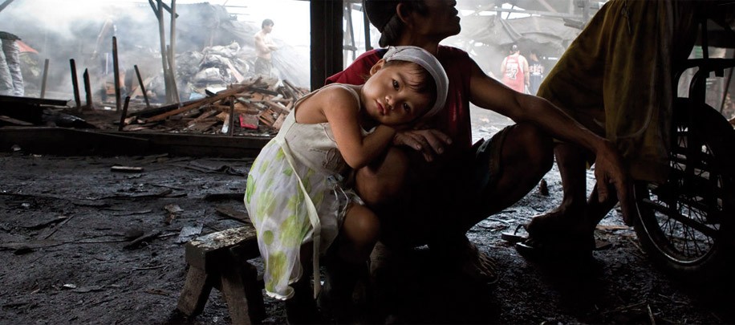

摘要
馬修·羅素李使用信標來告訴聯合國安理會的故事-和它的受害者，他會告訴你如何在聯合國和世界體系既過於頻繁失敗自己的原則和人民，他們都應該保護。他涵蓋聯合國無為而40,000人死於斯里蘭卡在2009年，聯合國偏袒在剛果民主共和國和敘利亞於2013年。
Published MAY 19 AT 4:40 PM

無休止的戰鬥，已造成最大的人道主義危機在歷史上。隨著死亡人數的攀升以及超過500萬，“偉大的戰爭”已經奪去的生命比整個世界歷史上任何其他武裝爭議。 大部分撒哈拉以南非洲是籠罩在悲劇發生後，危機在這個區域有無數，並緊急在剛果也不例外。 但是還有另外一個故事，乞求被告知。復原力和力量的故事; 耐力和生存; 非凡勇氣的真正克服重重困難面前。
 我是圖說我是圖說我是圖說我是圖說我是圖說我是圖說跟著我到坦桑尼亞，一個國家有超過265,000難民和國內流離失所者來自剛果和布隆迪的衝突和戰爭後逃走尋求庇護。了解過68000人在難民營中基戈馬及周邊地區，他們的生活的決心。意識到已經破壞撒哈拉以南非洲地區的情況，並宣讀那些誰生存，誰是修復他們的生活，重建自己的未來，並希望做一個現實的故事。 我參加博士珍古德的根與芽計劃在20多年前，發現用我的生命使動物，人類，以及與服務環境的差異，在志願服務的機會，並通過保護。這是根與已使我在那裡我今天芽，並繼續激勵著我的工作。 我第一次知道了撒哈拉以南非洲難民危機在2001年，當珍古德博士與我分享了根與芽青少年Lugufu難民營在坦桑尼亞。我的靈感來自於珍博士和Lugufu的孩子誰，就像我一樣，相信他們可以改變世界的差別。我開始了數年多頭主動提出為Lugufu青年和他們的根與芽項目提供資金，並通過這種努力遇到了我最親愛的朋友，沙得拉米煞，誰是負責幫助根與芽在許多坦桑尼亞的難民營蓬勃發展。 這個月，我將前往坦桑尼亞沙得拉在那裡，我將繼續通過根與芽與我們的組織傳播希望的簡博士的消息，我的兩隻手，通過連接本地坦桑尼亞青年難民基戈馬，坦桑尼亞與教育節目，研討會，文化活動，和紀念足球比賽，“簡氏杯”榮譽，今年博士珍·古道爾的80歲生日，其中超過500名青年將匯聚一堂，通過遊戲來慶祝和平。 這些機遇沙得拉和我所嚮往的提供給當地青年和難民都努力向他們傳授告知倡導，素質教育，為所有，尤其是婦女和兒童，以及環境的可持續性和保護強有力的保障。有了您的支持，它可以成為可能。

您的資金將直接朝著全面建設一個更好的非洲
我的項目是獨一無二的，因為你的後盾做更多比我的雜誌和故事接你。 它有助於修復生命，重建期貨，使希望成為現實。 雖然我有一個目標，培養$ 15,000元，每一筆捐款從你的後盾，無論是大或小，將支持建設一個更美好非洲。
承您所述,任何的公民權利都是慢慢的循序漸進而來的,但看到目前的這些現象不就是您所說的想要快速的要躍進(跳樓),要快點達成的方法不就最古老的方式-革命,既然想快點實現自己所說的民主又不敢革命不是半調子是甚麼...
承您所述,任何的公民權利都是慢慢的循序漸進而來的,但看到目前的這些現象不就是您所說的想要快速的要躍進(跳樓),要快點達成的方法不就最古老的方式-革命,既然想快點實現自己所說的民主又不敢革命不是半調子是甚麼...
1996年種族暴力發生在扎伊爾，發起這已成為自二戰以來最血腥的軍事鬥爭。剛果的衝突，非洲的“偉大的戰爭”，是一個多殘酷的內戰; 它是一個永無休止的戰鬥，已造成最大的人道主義危機在歷史上。隨著死亡人數的攀升以及超過500萬，“偉大的戰爭”已經奪去的生命比整個世界歷史上任何其他武裝爭議。
是的，我們是付費新聞
但我們的方式很不一樣！